CoarseGrainedSchedulerBackend: the driver's executor ledger
component index · Driver JVM, executor-facing endpoint · Apache Spark dada2a6
Overview
CoarseGrainedSchedulerBackend.DriverEndpoint knows which executor can
receive a launch and which of its advertised resources are free. It turns
those resources into offers to TaskSchedulerImpl, then
sends the returned task descriptions to executors. Executors outlive individual
tasks: completing a task returns Spark scheduling capacity on that executor,
not memory or vcores to YARN. The YARN adapter
handles executor-count requests separately.
Flow at a glance
- Registration: The driver records executor 3 with two cores but zero free.
- Executor ready: A launch acknowledgement lets the driver offer both cores.
- Task 41: Uses one core until the driver receives its finish report.
Key distinction: A finished task frees a Spark slot, not the executor's YARN container.
Show the animated flow

Requirements analysis
Do not assign work to an uninitialized, removed, or decommissioning executor.
Track CPU and custom resource addresses across many launches; keep registration,
launch and terminal status distinct. Report executor loss so higher layers can
decide whether to retry tasks or stages. Registry and counters ·
active predicate · terminal update.
Component architecture and lifetime
YarnClusterManager creates a client- or cluster-mode backend derived from
this class. During construction, the base backend registers
createDriverEndpoint() under the RPC name CoarseGrainedScheduler; on YARN
the factory returns a YarnDriverEndpoint. This is not the endpoint named
YarnScheduler that talks to the AM. The driver endpoint's onStart schedules
periodic ReviveOffers messages. The backend's separate start() initializes
credential managers. On normal scheduler shutdown it stops the timers, asks
StopExecutors (fan-out StopExecutor), then asks StopDriver to stop the
endpoint. An acknowledgement of the fan-out is not proof that every remote
process has exited. YARN factory · endpoint construction ·
name · YARN override · timer · start/stop ·
stop handlers.
Data models and concurrency
| Driver state |
Meaning |
executorDataMap(executorId): ExecutorData |
RPC ref/address, hostname, integer totalCores, exact decimal freeCores, named resource addresses, profile ID and timestamps. addressToExecutorId supports disconnect lookup. An executor ID is not a task ID or YARN container ID. |
totalCoreCount, totalRegisteredExecutors |
Atomic totals across registered executors. totalCoreCount does not fall when a task starts; that task debits its executor's freeCores. |
| Pending removal, loss-reason and decommission sets |
An executor can still have a registry record while excluded from future offers. Final removal drops metadata and totals and notifies the scheduler and listener bus. |
DriverEndpoint uses an isolated RPC endpoint with one delivery thread. The
backend monitor also protects registry changes visible to non-endpoint callers.
Where both scheduler and backend state are needed, withLock acquires the
scheduler monitor then the backend monitor. This serializes the offer
decision with changes such as an idle-executor removal. launchTasks runs
after that joint lock is released. Offer and launch order · ExecutorData ·
registry · single-thread contract · ordered locks ·
removal.
Design patterns used
Factory Method (creational). The base class installs the endpoint through
createDriverEndpoint instead of constructing one fixed implementation. YARN
overrides the disconnected-executor behavior to ask the AM why an executor
exited, while inheriting the same register/launch/status protocol. A separate
implementation of that whole protocol per cluster manager would duplicate the
resource ledger; the trade-off is that the concrete disconnect behavior cannot
be inferred from the base class alone. Base factory · override.
API/interface definitions
| Message/caller |
Driver action and output |
Executor → RegisterExecutor(id, ref, hostname, cores, ..., resources, resourceProfileId) (ask) |
Rejects duplicate IDs or excluded placements; otherwise records the endpoint with zero free cores, increments registration totals, posts SparkListenerExecutorAdded and replies true. Register · insert and reply |
Executor → LaunchedExecutor(id); scheduler/timer → ReviveOffers (send) |
Launch acknowledgement initializes freeCores from totalCores and makes a single-executor offer. Revival builds WorkerOffers for all active executors. These are local scheduler calls, not RM offers. Launched handler · offer construction |
Scheduler → descriptions; executor → StatusUpdate(id, tid, state, data, taskCpus, resources) |
Backend encodes descriptions and sends LaunchTask to each selected RPC ref. It forwards status/payload to scheduler.statusUpdate; only a terminal state on a known executor returns CPU/address amounts and triggers another offer. Send · status sender · status handler |
Scheduler → killTask(tid, executorId, interruptThread, reason) |
Sends a KillTask to the driver endpoint, which forwards it if the executor is known. Sending a kill does not credit the slot; the terminal-status or executor-removal path accounts for it. Public entry · forward |
Implementation notes: a two-core executor registers and runs one task
Sequence diagram · Open full sizeText equivalent
sequenceDiagram
participant E as Executor backend
participant D as DriverEndpoint
participant S as TaskSchedulerImpl
E->>D: RegisterExecutor(id=3, cores=2)
D-->>E: true (registered, free=0)
E->>D: LaunchedExecutor(3)
D->>S: resourceOffers(executor 3, free=2)
S-->>D: TaskDescription(TID 41, executor 3, cpus=1)
D->>E: LaunchTask (free=1)
E->>D: StatusUpdate(41, RUNNING)
D->>S: statusUpdate(41, RUNNING)
E->>D: StatusUpdate(41, FINISHED, cpus=1)
D->>S: statusUpdate(41, FINISHED)
D->>S: resourceOffers(executor 3, free=2)The example assumes no other tasks. The executor backend constructs its Executor
between registry acceptance and LaunchedExecutor. The driver reserves the
description's CPU and named address amounts before sending the launch.
The executor echoes those same assignments from the running task description
in its status update. RUNNING confirms launch; it does not release anything.
The new offer after FINISHED does not wait for result decoding or stage
completion. Executor initialization · debit at launch ·
return of resources · asynchronous result handling.
Loss, cancellation and late status. Base onDisconnected removes a known
executor with ExecutorProcessLost. On YARN the override can instead call
disableExecutor, stop offers immediately, report LossReasonPending, then
deliver RemoveExecutor when the AM answers. Final removal distinguishes a
driver-requested kill or decommission from another loss. A late terminal
status for an already-removed executor is forwarded to the scheduler, but
there is no ledger entry to credit or offer. No LaunchTask retry is initiated
by that late message; retry policy lives above this endpoint.
Base disconnect · disable · final removal ·
unknown executor.
makeOffers(executorId) targets just the freed executor, while periodic all-executor
rounds let locality-delayed work be reconsidered even if no task finishes.
Encoding large task descriptions also uses driver time. Diagnostic: if the
encoded launch is at least spark.rpc.message.maxSize in bytes after unit
conversion, the backend aborts the manager rather than debit resources and
send it. The driver's serialized-task-size error alongside no corresponding
executor Got assigned task is a launch-path problem, not a YARN allocation
timeout. Offer scopes · size guard and launch ·
executor receive.